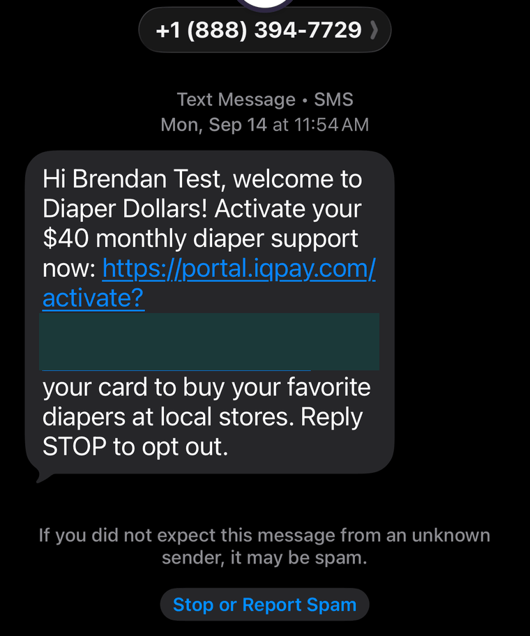
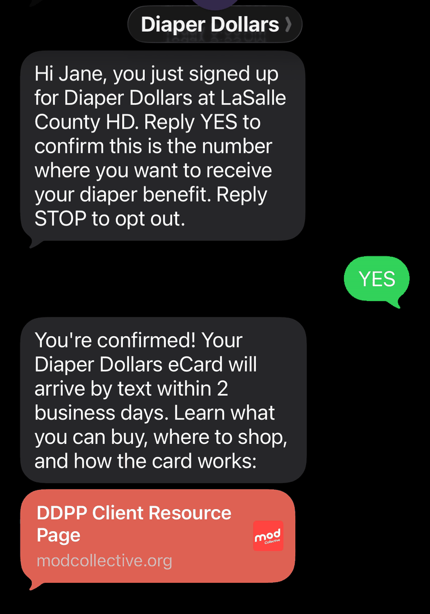

Everything your team needs, in one place.
This page is for staff at participating sites for the FY27 Diaper Distribution Pilot Program. Enrollment steps, family questions, training, and support all live here.
Enrollment window
—days until enrollment opens
Enrollment goal
—applications submitted
Need support?
Enrollment questions, a lost enrollment link, a family situation you are not sure about, or anything else about the pilot. Reach MOD Collective directly.
Call 844-663-2655 Email usHow the program works.
Reference information for answering family questions. Each section is short. If you need more, check the FAQ.
The benefit
A digital eCard, reloaded every 31 days for six cycles. The amount depends on how many children under 3 are in the household.
| Children under 3 | Each 31 days | Across all 6 cycles |
|---|---|---|
| 1 child | $40 | $240 |
| 2 children | $80 | $480 |
| 3 children | $120 | $720 |
Three children is the household maximum. The six cycle totals assume each balance is spent in full — whatever is left over is removed at the end of every 31 day cycle and does not carry forward.
Clients receive six installments. Each expires after 31 days, and a new benefit is loaded onto their Diaper Dollars eCard. The benefit cycle starts on the day a client receives their first benefit, not the day they enrol — so two families who enrol the same afternoon can end up on different schedules.
This is a limited pilot for State Fiscal Year 2027, and services beyond this year are not guaranteed.
What the card buys
The Diaper Dollars eCard can be spent on diapers only.
We curate an approved product list at every participating retailer, covering each diaper product that retailer carries. When a client checks out and scans their eCard, the system identifies the qualifying items in the basket and applies their Diaper Dollars to those. Everything else in the basket is paid for as normal.
Covered
- Disposable diapers for children
- Every size, newborn through toddler
- National brands and store brands alike
Not covered
- Baby wipes
- Diaper creams and ointments
- Adult incontinence products
- Anything else in the baby aisle
So a basket with diapers and wipes in it is not a problem. The card covers the diapers, and the family pays for the wipes the way they normally would.
Brands families will find
- Pampers
- Huggies
- Luvs
- Honest
- Hello Bello
- Seventh Generation
- Cuties
- Store brands
This is not a comprehensive list. Any baby diaper product at a participating retailer will qualify.
Where the card works
The card runs on the OTC network. These are the twelve retailers accepting it in Illinois. Families can use it at the register or at self checkout, and at three of them online as well.
- Cub
- CVS
- Dollar General
- Family Dollar
- Food 4 LessOnline too
- JewelOnline too
- Kroger
- Mariano’s
- Meijer
- Ruler
- Walgreens
- WalmartOnline too
Retailer specific checkout instructions are shown on the card itself once a family picks where they are shopping, and are texted to them when the card is issued.
Online ordering
Walmart is where most online ordering happens. In last year's program Walmart accounted for 79% of all transactions, and Walmart online alone was 29% of them — close to a third of every purchase families made. Food 4 Less and Jewel also take the card online. The other nine retailers are in store only.
The online storefront is a separate entry in the store list. A family shopping Walmart online has to pick the Walmart.com listing, not the Walmart one. Choosing the in-store listing produces a barcode, which is no use at an online checkout.
- Open the card link and select the list of stores.
- Choose the retailer's online listing, for example Walmart.com rather than Walmart.
- Shop on the retailer's own website as normal.
- At checkout, enter the card number from the top of the card into the debit or credit card field. There is no separate code and nothing to redeem.
Which products are covered does not change online. If a family is unsure about an item, Check a Product works the same way.
Eligibility
| Requirement | WIC clinics | Home visiting programs |
|---|---|---|
| The child | Under 3 and currently in diapers. | |
| Income standard | Meets WIC income guidelines, 185% of the federal poverty level. This is the same across every site. | |
| Verifying income | Already verified as part of WIC. Nothing extra to do. | Enrollment in WIC, SNAP, or Medicaid counts as verification. |
| Release of Information | Not needed. The family consents on the form itself. | |
| Children per family | Up to 3, covered by one enrollment. | |
| Enrollments per child | One, at one site. No duplicates and no re-enrollment. | |
| Already using a diaper bank | Still eligible. | |
The short version: if a family qualifies for WIC, they qualify for this. The only thing that differs by site type is how income gets verified, not the standard it is measured against.
Your role
You do
- Open your site's enrollment link at the visit
- Walk the family through about five minutes of questions
- Check the staff attestation box if you are assisting
You do not
- Handle physical diapers, pallets, storage, or volunteers
- Verify income beyond what you already do for WIC
- Manage the eCard or field benefit questions
- Do anything at all once the family has submitted
Once a family is enrolled, the Diaper Dollars support team handles everything. Families receive the support number and email with their card.
How the Diaper Dollars card works.
You will not manage the card, but families will ask you about it. This is what they see and how it behaves.
How families get the card
Once a client confirms their number, their eCard arrives as a text with an activation link in it. There is no app to download. The link opens in any browser on a phone, tablet, or computer, and it is the same link for the whole program — it is not reissued each cycle. Tell families to save the message.

What they see when they open it
A digital card with a payment card number and the client's name on it. This is a real payment method issued to that client, not a coupon or a voucher code. The card number matters for online shopping: it goes in the debit or credit card field at checkout, the same as any other card.

Available in 14 languages
A language selector sits in the top right corner of the card page. Choosing a language translates the entire card experience, not just the menu. Spanish, Arabic, and Cantonese are among the options. Families do not need to ask anyone to set this up.

Active offers, balance, and the 31 day cycle
Below the card, families see their active offer: the amount they receive, the current balance, and a Valid thru date. The amount depends on how many children under 3 are in the household — $40 for one, $80 for two, $120 for three. It arrives as a single balance, not as a separate offer per child.
The balance does not roll over. Families have 31 days to spend it. Whatever is left on the expiration date is removed and a fresh balance is issued for the next cycle. Unspent money does not accumulate and is not returned. Over a six month enrollment there are six of these cycles.
Say this out loud at enrollment. A family saving up several months for a bulk purchase will lose the earlier balances, and they will not find that out until the money is already gone.

Paying in a store
- Open the card link and select Click here for a list of stores.
- Choose the retailer they are shopping at. The list is searchable and covers major grocery and pharmacy chains.
- Select Pay with Barcode. Instructions specific to that retailer appear, for both self checkout and a staffed lane.
- Follow the steps on that screen. They differ from store to store.
- Scan the Diaper Dollars barcode, before any other form of payment.
Every retailer has its own checkout process
The instructions that appear are written for the specific store the family picked, and they are not the same everywhere. It will not always be "press Total or Pay", and a staffed lane will not always ask for Credit/Debit. If a family describes steps that do not match what you remember, they are probably reading their screen correctly — tell them to follow it rather than going from memory.
The one thing families get wrong
Whatever the retailer's steps are, the Diaper Dollars barcode has to be scanned before any other payment type. If a family swipes a debit card or hands over cash first, the diaper benefit will not apply to the order. This is the most common reason a payment fails.


Paying online
Families enter the card number from the top of their card into the debit or credit card field at checkout. Online storefronts appear in the store list as their own entries, so a family shopping at Walmart online selects the Walmart.com listing rather than the in-store one.

Printing a card to carry
Families who would rather not use a phone at the register can print one. They pick the retailer they intend to shop at, then use the print button at the bottom right. The result is a print ready card carrying that retailer's checkout instructions and a scannable barcode. It is retailer specific, so a family shopping at two stores prints two.

Checking whether a product is covered
The card page has a Check a Product feature. It opens the phone camera so a family can scan a barcode on the shelf and see immediately whether that item is covered, before they get to the register.

Program guidelines and help
Buttons at the bottom of the card page open the full program guide and a help section with phone, email, and chat support, plus a program FAQ. Families do not need to come back to your site for any of this.
For anything at all — the program, enrollment, or a card that will not work — you and your families can call MOD Collective on 844-663-2655. We will pass it to technical support ourselves if that is what it needs.
Families will also see 888-253-5667 printed on their own card. That is technical support directly, and it is a perfectly good number for them to use for a card or checkout problem. Either route works; 844 is the one to remember.
Enroll a family.
Five minutes at the visit. Nothing after that.
Who is eligible
- The child
- Under age 3 and currently in diapers.
- Income
- Meets WIC income guidelines, 185% of the federal poverty level. At a WIC clinic that is already verified. Otherwise, enrollment in another assistance program — SNAP or Medicaid — counts as verification of the same standard.
- Children per family
- Up to 3, on a single enrollment. One form covers the household — you are not filling it in three times. Each child does have to meet the criteria above on their own.
- One enrollment per child
- A child can be enrolled once, at one site. There is no re-enrollment period, and the same child cannot be added at a second site later.
- Already getting diapers elsewhere
- Still eligible. Using another diaper bank does not disqualify a family.
The steps About 5 minutes
- Open your site's enrollment link on your tablet or computer. Each site has its own link.
- Hand it to the family or walk them through it. One form covers the whole household, including every eligible child.
- Fill in the first page: your staff email from the dropdown, the caregiver's ID number, their name, their mobile number twice, and how many children under 3 are in the household.
- Answer the terms and conditions page: who is completing the form, how the client reviewed the terms, and the two consent boxes.
- Complete the Diaper Need Assessment. Three short questions.
- Submit. The client gets a text asking them to reply YES.
- Done. Nothing else is needed from you.
What the form asks for
Three pages, about five minutes. Nothing here needs preparing in advance beyond the caregiver's ID and a mobile number.
Page 1 — the household
- Staff email. A dropdown. Pick your own from the list.
- Caregiver ID number. Use the WIC household ID. Home visiting programs use their own equivalent.
- Caregiver name. First and last.
- Mobile phone number, entered twice to catch typos.
- Number of children under 3. A dropdown, maximum of three.
The phone number is the whole enrollment. Everything after this point — the confirmation, the card, every renewal — goes to that number by text. A mistyped digit means the family never hears from us again, and nothing about the submission will look wrong to you. Check it against the family, not just against the second box.
Page 2 — terms and conditions
- Who is completing this page: the client themselves, or a staff member assisting.
- How the client reviewed and agreed: in person with the client present, by phone or virtual, or the client reviewed the terms directly and you submitted on their behalf.
- The terms and conditions box, which has the full legal language in it.
- Consent to receive communications from MOD Collective by email and text. This one is required — without it there is no way to deliver the card.
Page 3 — Diaper Need Assessment
Three questions about the family's experience of getting diapers: whether they have ever received free diapers locally, what made that difficult, and whether running short has caused problems such as missing work or childcare, skipping changes, or cutting back on food, medicine or bills. Most are tick-all-that-apply.
The form is HIPAA compliant, and there is a Back button on every page, so a wrong answer is not a restart.
Lost your enrollment link?
Enrollment links are specific to your site and are not published on this page. That is deliberate. A family enrolled through another site's form is credited to that site, which distorts both your numbers and the state's comparison of WIC clinics against home visiting programs — the central question this pilot year is built to answer.
To get your link back: ask your site coordinator first. If they cannot find it, contact support and we will reissue it to you directly.
What to tell the family about what happens next

-
Right away
A text arrives from Diaper Dollars naming your site and asking them to reply YES to confirm this is the number they want their benefit on. Nothing moves until they reply, and this is where families most often stall.
-
Once they reply
A confirmation text comes back, with a link to the client resource page — what they can buy, where to shop, and how the card works.
-
Within two business days
Their eCard arrives as a separate text with an activation link in it.
-
When the card is issued
The first balance loads and the six cycle benefit begins. The clock starts here, not at enrollment.
-
Every 31 days, six times
A fresh balance replaces the old one. Anything unspent is removed, so it has to be used inside the cycle.
-
From then on
The Diaper Dollars support team handles everything. Your site is not involved again.
Why the evaluation questions are on the form
Families may ask why the form has extra questions. Here is what to tell them, depending on your site type. Individual responses are never shared with your site.
WIC clinics
Three questions about diaper accessWhether the family has ever received free diapers from a local organization, what made that difficult if they have, and whether running short has caused them to miss work, skip changes, or cut back on other essentials.
These document what diaper access looks like in counties with no diaper bank.
Home visiting programs
Three questions about connection to benefitsWhether the family had already connected to WIC, Medicaid, SNAP, or childcare assistance before this visit, whether they had a plan for getting diapers, and how concerned they are about affording diapers in the coming months.
These test whether home visiting is an effective way to connect families to this benefit.
About the Diaper Distribution Pilot Program.
A state funded test of whether Illinois can put a monthly diaper benefit in families' hands through the systems they already use.
What it is
The Diaper Distribution Pilot Program was created by the Illinois General Assembly to test whether Illinois can provide a monthly diaper benefit to families with young children. It is funded through the Illinois Department of Human Services and the Illinois Department of Public Health, and operated by MOD Collective through the Diaper Dollars platform.
Why it exists
No federal program covers diapers. Every major benefit a young family is likely to already receive leaves them out:
- SNAP✕ Excludes diapers
- WIC✕ Excludes diapers
- TANF✕ Excludes diapers
- Medicaid✕ Excludes diapers
What a month's supply costs, per child.
Families with young children who cannot consistently afford the diapers they need.
When families run short, children stay in wet diapers longer, parents miss work because childcare requires a daily diaper supply, and families cut back on food or medicine to cover the gap. Nationally, the cost of that gap is estimated at $4.5 billion a year — and research puts the return on closing it at roughly $2 of direct healthcare savings for every $1 spent on diaper assistance.
How it works
Instead of distributing physical diapers, the program loads a benefit onto a digital eCard that families use at retailers they already shop at.
| Physical distribution | Diaper Dollars | |
|---|---|---|
| Storage | Warehouse space and pallets | No physical inventory |
| Staffing | Volunteer coordination and on-site hours | A remote support team on existing infrastructure |
| Reaching families | Families travel to a distribution site | Existing benefit enrollment, then the card is delivered digitally |
| Brand and size | Whatever is in stock | The family chooses |
| Service area | Limited to the community around each site | Can deploy nationwide, and quickly |
The model moves the work rather than removing it. There is still a support team behind the card. What changes is that none of it lands on your site.
What previous years have shown
FY25 ran through four WIC sites chosen to cover very different ground: CEDA across Chicagoland, Sinai Community Institute on Chicago's West Side, Henry-Stark County in rural western Illinois, and Southern Seven across seven southern counties. Between them they served 5,410 families and distributed $1.26 million in benefits.
Reported less stress about diapers. Three quarters said “much less”.
Reported being better able to afford other household needs.
Found the program easier to use than traditional sources such as food pantries.
Families used what they were given. Overall utilisation was 78.1%, with a median per-family rate of 88.9% — and the rural sites were the highest of all, at 82.9% and 80.4%. The median transaction was exactly $40.00, a family spending a full month's benefit in one trip, and the median time from receiving a card to the first purchase was nine days.
Of the families offered a second enrolment, 63.3% took it. Every single one of them said they wanted to continue.
What this year is testing
FY27 is built around two questions.
Question one
Can this be the primary diaper resource where nothing else exists?Every WIC site in this year's program sits in a county identified as having zero existing diaper distribution.
Question two
Is a WIC clinic the best way to reach families?Two home visiting programs are participating alongside the WIC sites, so the state can compare enrollment, utilization, and reach across both models.
The answers will inform whether and how the program expands in future years.
Training and support.
Who to call, what to watch, and answers to what sites ask most.
For families: the card
Trouble opening the card, or a payment that will not go through at the register. This is the number printed on the card itself, so families may already have it:
For site staff: the program
Enrollment questions, a lost enrollment link, or anything about how the pilot runs. This reaches MOD Collective directly:
Training videos
Frequently asked questions
Can families buy wipes with the card?
No. The benefit is diapers only. Wipes, diaper creams, and adult incontinence products are all excluded. If a family rings up diapers and wipes together, the card covers the diapers and they will need another form of payment for the rest.
What happens to families after enrollment closes in December?
Nothing changes for them. December 23 only stops new families being added. Anyone already enrolled keeps receiving a balance every 31 days until their six cycles are finished, which runs into June 2027 for the last enrollees. Your site is not involved in any of it.
What happens to money a family does not spend?
It is removed at the end of the 31 day cycle and a fresh balance is issued. Unspent funds do not carry over and are not returned. Tell families this at enrollment, because a family saving up for a bulk purchase will lose the earlier balances without warning.
A family's payment was declined at the register. What went wrong?
Almost always the barcode was scanned after another payment type. It has to be scanned first, with the hand scanner, before cash or any card. If the order was rung up correctly and it still failed, they should call technical support at 888-253-5667.
Why is our enrollment link not on this page?
Enrollment forms are site specific and access to them is controlled for quality assurance. If links were published here, a family could be enrolled through the wrong site's form, which credits them to that site and distorts the state's comparison of WIC clinics against home visiting programs. If you have lost your link, ask your site coordinator, or call 844-663-2655 and we will reissue it.
Do we enroll babies only, or can we enroll toddlers too?
Any child under age 3 who is still in diapers. Newborns, infants, and toddlers all qualify. A child who has finished potty training is not eligible, even if they are under 3.
Does a family with three children fill out three forms?
No. One enrollment covers the household and up to 3 children. Each child still has to be under 3 and currently in diapers to be counted, and the benefit reflects how many qualify: $40, $80, or $120 per cycle. It arrives as one balance on one card, not as a card per child.
Is there a cap on how many families we can enroll?
No per site cap. The 5,500 target is shared across all 12 sites, first come first served. Enroll every eligible family you see.
What if a family already gets diapers from another program?
They are still eligible. The only restriction is no duplicate enrollments for the same child across sites.
Do we need a Release of Information form?
No. The family consents to share their information directly on the enrollment form. Nothing separate is needed from your office.
Are there printed materials?
No. Everything is texted to families.
What if a family does not get their confirmation text?
Check the number that went on the form first — a mistyped digit is the usual cause, and nothing about the submission will look wrong. If the number is right and nothing has arrived within a few minutes, call 844-663-2655 and we will look it up.
How long does the enrollment form take?
About 5 minutes, including the evaluation questions.
The Diaper Distribution Pilot Program is funded by the Illinois Department of Human Services and the Illinois Department of Public Health, and operated by MOD Collective.